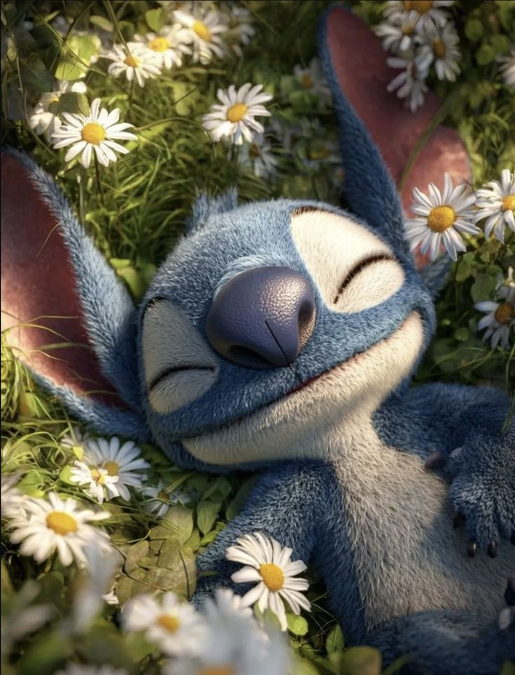

Personajes Principales:
- Stitch - Experimento 626, azul y travieso
- Lilo - Niña hawaiana que adopta a Stitch
- Nani - Hermana mayor de Lilo
- Jumba - Científico que creó a Stitch
- Pleakley - Alienígena especialista en Earth
Conoce a la familia Ohana
